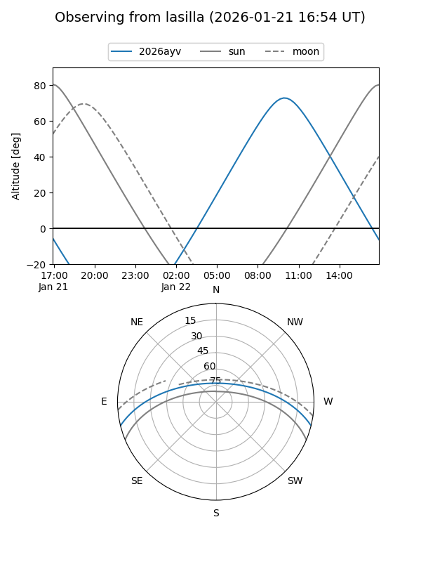
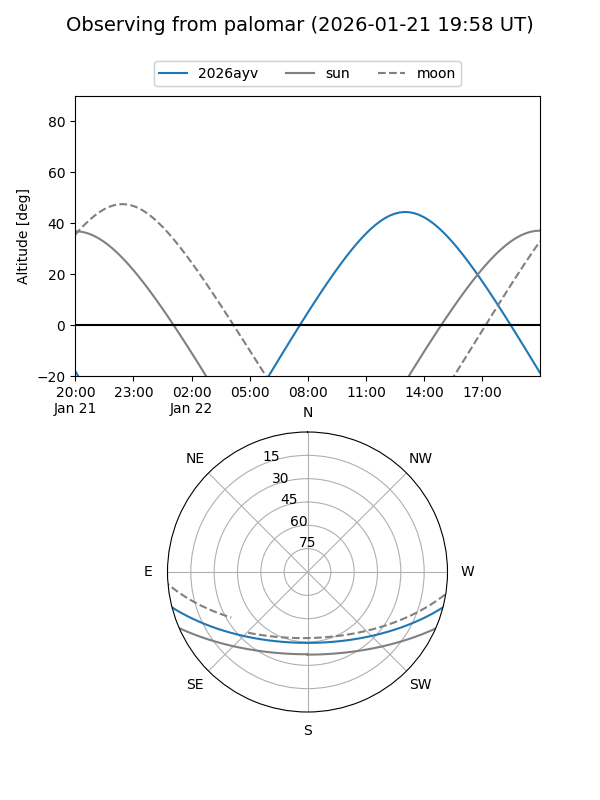

2026ayv
Target 2026ayv at 2026-01-21 18:06
Aliases and brokers:
FINK: link
Lasair: link
ALeRCE: link
TNS: link
YSE: link
alt names
ZTF26aadoiiy (ztf,fink_ztf)
2026ayv (tns,yse)
Coordinates:
equatorial (ra, dec) = 200.1432,-12.07256
equatorial (HMS+DMS) = 13:20:34.38,-12:04:21.23
galactic (l, b) = (314.0920,+50.16680)
Flags:
Photometry:
last ztfg=19.79
1 ztfg detections
Lightcurve

Visibility


Additional plots